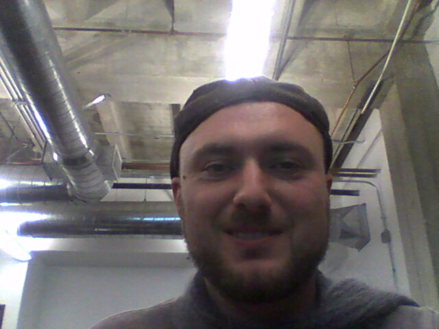

About Me

I was born in Ukraine and came here in 1998, the year of Fifa, when Zenedine Zidan scored those decisive goals against Brazil in the French World Cup. You can tell I loved soccer, or footbal. Then I came to USA where I studied in Gardner Street School. Everyone there was Russian-speaking and it was easy to get accustomed to English language.
As a kid I yoyo'd. I would be able to loop de loop, and make a Darth Vader with my hands, even a starship, it was sick.
Then in middle school I heard punk for the first time and my journey into Lo-Fi started. I've also studied psychology in university and learned a lot of knowledge, but I felt it was too logical and in essence all psychology is about feeling, 'feeling is healing', no need for deep mind analysis or dream interpretation. I got tired of the arts and sought out something more scientific and by then coding was creating a buzz and I got started with the free code camp.
I bought a PC and converted it to Linux and deleted Windows, there was no going back. I also installed it on my cousins computer because he couldn't install Windows and was running into problems. I ended up making a boot drive for him as it allowed him to save his documents and always have a fresh install system.
I've studied SQL and Python but never towards any monetary gain, so I've decided to learn React and web development in depth. Thank you for reading
TLDR: Lets learn web development together!!!